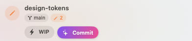
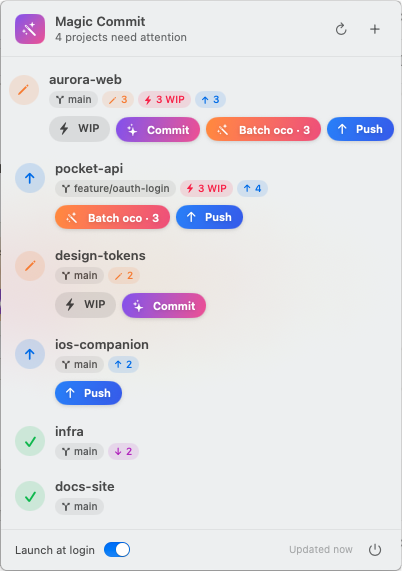
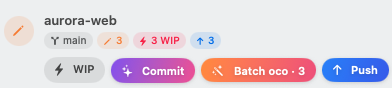
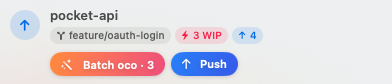
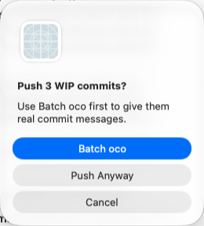

Commit
Stages everything (unless you've already staged something) and runs oco --yes for a descriptive message.

→ site/screenshots/commit.png
A menu bar app that keeps an eye on your git projects and commits them with AI-written messages
from opencommit, in one click.
Save your work with a quick WIP, and let Magic Commit rewrite every WIP into a real message before you push.
Universal app for Apple silicon and Intel · MIT licensed

Each project shows its branch, changed files, WIP commits and ahead/behind counts, with only the actions that make sense right now. The menu bar icon counts how many projects have something to commit or push.
Stages everything (unless you've already staged something) and runs oco --yes for a descriptive message.

An instant commit with the message WIP, with no AI call. Save often, think later.

Gives each unpushed WIP commit a real message generated from its own diff. Other commits keep their messages, empty WIPs are dropped, and author dates are kept.

Runs git push, setting the upstream for new branches, and warns you first if WIP commits are still in there.

Batch oco never touches your branch until it has proven the result is identical.
HEAD are replayed in a temporary git worktree, away from your files.oco --yes writes its message. Every other commit is re-committed unchanged.HEAD hasn't moved in the meantime.Requires macOS 14 Sonoma or later and opencommit. Magic Commit reads your PATH from your login shell, so oco from nvm or Homebrew is found.
npm install -g opencommit
oco config set OCO_API_KEY=<your key>xattr -dr com.apple.quarantine "/Applications/Magic Commit.app"Prefer building it yourself? See Build from source.